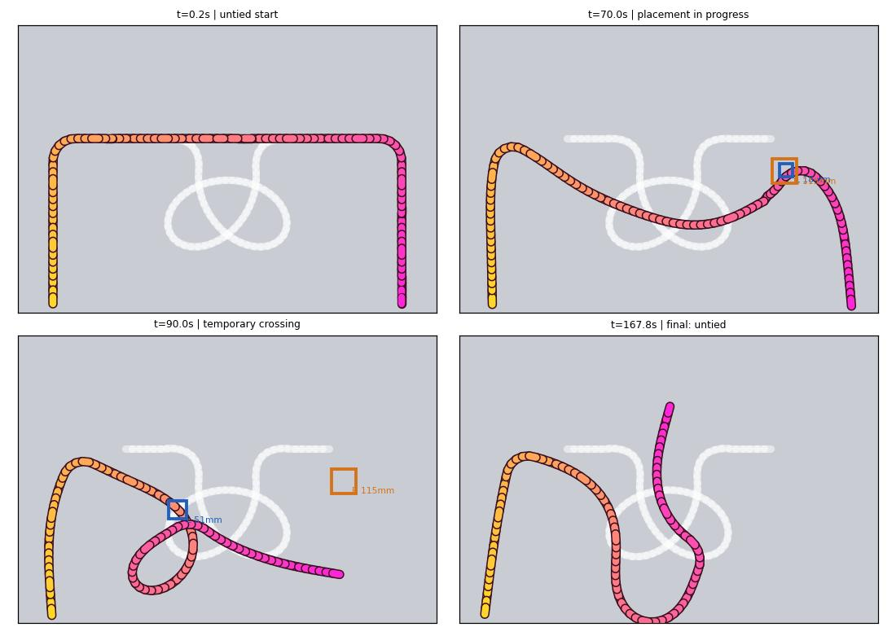
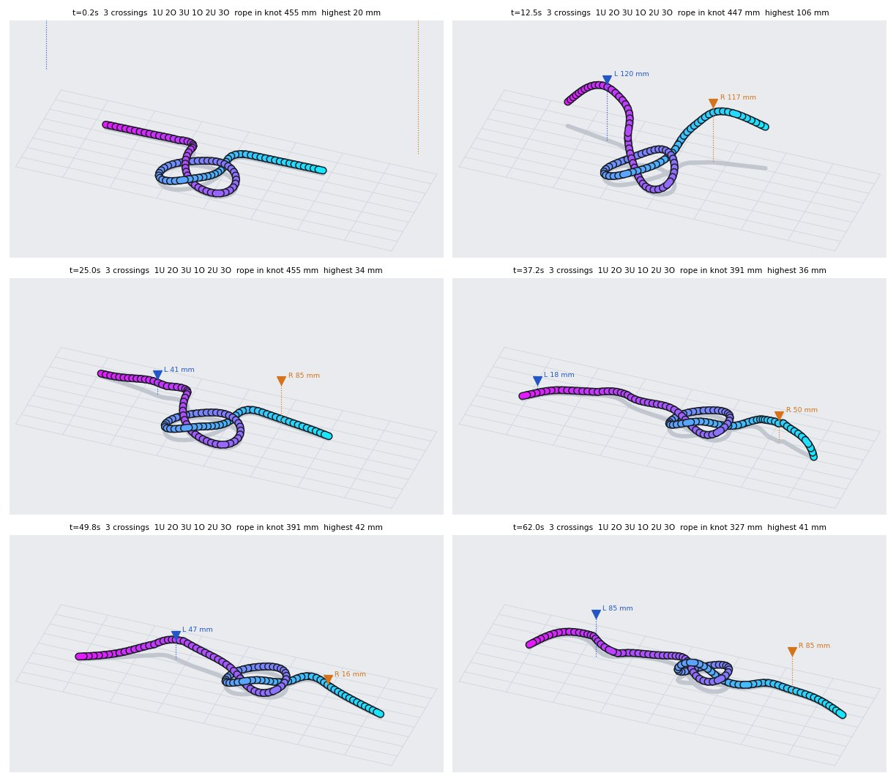

双臂机器人打结实验：收紧与穿绳
我们从视频里选打结任务，用 RoboSimStudio（RSS，Newton 物理）把场景和绳子重建进仿真。智能体按 Graph-as-Policy（GaP）的方式写出机器人计算图，在 Daytona 上并行排练，把失败定位到具体节点再改图。已有的有效结果是收紧预先打好的结；从未打结绳完成普通单结仍未成功。
三个任务，现在的状态
单结收紧整形
视频第 3 步：双手把预先打好的松单结拉紧。完整判据下 G0、G1、G2 分别为 0/10、5/10、6/10。这是复用训练实例的配对重测，不代表已经能从直绳打结。
从直绳打单结
早期 5 轮自学习，留出测试 0/16。最新闭环候选已通过前三段摆绳的动作检查，仍在保持交叉与滑移处失败；新增诊断均未打成结。
双钱结（中国结）
8 个交替压挑的交叉。耳翼绕不上针、两处下穿做不出来，图从没形成过交叉。
前三段摆绳能完成，下一处瓶颈已定位到持绳滑移
新的闭环候选不再只等机械臂到达坐标：每段动作读取实际绳位置，检查被抓材料点是否跟随，再从当前绳形规划后续动作。v8、v9、v10 在同一个标称实例上，前三段摆绳的检查均通过；被移动绳材料点的位置误差为 2.2–15.5 mm。这是动作层面的进展，还没有成为保留下来的单结。
| 候选 | 前三段摆绳 | 首次辅助持绳 | 后续失败与最终结果 |
|---|---|---|---|
| v8 | 3/3 动作检查通过 | 未持住 | over 阶段失败；最终 0 交叉、未成结 |
| v9 | 3/3 动作检查通过 | 检查通过 | 之后持绳调用有参数接口错误；最终 0 交叉、未成结 |
| v10 | 3/3 动作检查通过 | 检查通过 | 下一段摆绳报滑移，误差 172.5 mm；最终 0 交叉、未成结 |

统计边界：这 3 个候选都重复使用 seed 0，是开发中的标称诊断，不是 3 个独立测试实例；新增完整单结成功数仍为 0。起点是未打结、两端朝向机器人的摆绳，没有预设交叉。没有改动物理参数来换取结果，也还没有做留出泛化评估。原始动作门、失败原因和末态见 本次进展证据。
画面和交叉数据必须一致
之前的俯视渲染曾把后面的绳段一律画在上面，结在图片里看起来就像没有打结。现在按实际高度绘制；下图逐个放大交叉核对。对于这里的参考单结，沿绳走一遍为 1U 2O 3U 1O 2U 3O。把两端在图外闭合后，Fox 着色矩阵给出的行列式是 3；故意把交叉改成一路压在上面的对照是 1。此检查依赖图外闭合的约定。

单结收紧：松手退开、落桌后，G2 成功 6/10
起点是 Howcast 视频 33 s 处的松单结（机器人不负责打结，只负责拉紧）。成功要求：仍是三叶结（任一手性），结里的绳长收到起始的 75% 以下，最高点离桌不超过 5 cm；同时两手开口至少 5 cm、工具中心离每个绳节点至少 6 cm，全部条件持续满足 1 秒。
之前的"0 → 9/10、80.6 s → 62.1 s"为什么作废
程序里的成功条件只检查了"是三叶结"和"绳长收到 75%"，没有检查结是否已经放回桌面。图在把结提起来往外拉的时候，结悬在两手之间、离桌 8–13 cm，此时就满足了条件，这一局随即以"成功"结束，松手验证那一步根本没有执行。下面的斜视图是那次"成功"的最后一帧：结在空中，影子落在下面。

| 图（同一批 10 个实例） | 完整运行时判据 | 成功局平均仿真用时 | 成功局最终核对 |
|---|---|---|---|
| G0 baseline | 0/10 | — | 无成功局 |
| G1（之前接受的 refiner c） | 5/10 | 105.92 s | 5/5 均为三叶结，双手张开退开 |
| G2（之前接受的 refiner a） | 6/10 | 65.42 s | 6/6 均为三叶结，双手张开退开 |
三版现有图使用完全相同的随机种子 10–19；这批实例在旧训练中用过，因此这是修正判据后的配对复核，不是新的学习曲线或留出泛化测试。样本只有每版 10 局。用时只统计各自成功的局，成功集合不同，不能据此当作同一批成功局的直接提速比较。
高度门槛按松手后的堆叠绳形定为 5 cm：静止紧结最高点实测 28–42 mm，之前被提着的结为 72–126 mm。重测还修复了世界高度与离桌高度混用的问题，并加入两手张开、退开后的连续检测。之前的成功率及中途错误坐标下的 0/10 表均已撤下。30 局判定、配置和精确末帧坐标见 结果档案；运行时保持判定与末帧复核分别保留。

refiner 是怎么找到问题的
它们只看排练记录，不能自己跑仿真。第 0 轮的 refiner 从调用记录里找到：第 3 轮 rope.point 报告左尾巴在 z = 0.8175 m，而捏取仍然下到 z = 0.7635 m 并超时，抬起后绳子反而往下走。于是改成在绳子实际所在的高度抓、抓空换点重抓、每轮按剩余松紧调整拉动距离。旧判据的成功率超过 30% 后，分工规则自动把一个 refiner 切到"缩短用时"上，G2 就是这样来的。
从视频到自学习的整条管线
- 网上视频Howcast / Art Sprouts
- RSS Real2Simlive 页面上重建，再用 compare / check 核对
- 任务与变化实例Newton · SuperDex 绳 · YAM 双臂
- Codex 编排拆成可定位失败的子图
- Codex skill agents并行实现各个子图
- GaP 计算图workflow.json 与执行脚本
- Daytona 并行排练独立沙箱运行、保存完整轨迹
- 失败定位节点调用、交叉关系与绳形
- 3 个 Codex refiner各改一版，回到第 7 步配对排练
失败定位
每局记录每个节点的工具调用和返回值、每 0.5 s 的绳子状态和交叉列表。分析器把失败归到具体子图和返回原因，把每个目标交叉标成"对 / 压挑反了 / 缺失"，并标出它是在哪个节点做出来的，再配一张俯视关键帧图给 refiner 看。
成功判据
从上往下看绳子的投影，沿绳走一遍得到 Gauss 码，例如单结是 1U 2O 3U 1O 2U 3O（或它的镜像）。双钱结是开口的 3 股 4 弯 Turk's head，要求 16 位码完全一致：1O 2U 3O 4U 5O 6U 2O 7U 4O 8U 6O 1U 7O 3U 8O 5U。
算力
Daytona 使用预装 RSS 的快照，每局独立运行并保留完整调用和绳形。2 vCPU / 4 GiB 与 8 vCPU / 16 GiB 都已实测可用：在同一个短抓取 probe 上，单次任务运行时间 71.31 s → 59.17 s（约 1.21×）；包含启动和取结果的 wall time 为 92.76 s → 76.15 s。这个 probe 只有一个标称实例，不能外推为完整打结提速；明细见 算力基准档案。SuperDex 线程数按实际 CPU 配额设置，避免线程争抢。
把 Howcast 视频重建进仿真
由 Codex 在 RSS 的 live 页面上按它自带的 real-to-sim 方法完成：先对齐首帧，再用视频后面的时刻检验绳子的物理。每张图左边是 RSS 渲染，右边是视频原帧。


标定出的绳径 10 mm 已采用。标定出的刚度 E = 2×10⁴ Pa 只对"静止形状"成立：在这个刚度下 YAM 的夹爪夹不住 SuperDex 绳（捏住拖 5 cm，绳头只动 4 mm；E = 1×10⁵ 时动 49 mm）。所以任务用回 RSS 自己打结示例的 1×10⁵。摩擦从视频里定不下来（0.0025–0.25 都能保持松结形状）。
早期诊断：下穿与交叉保持


任何结都至少需要一处"绳头从另一段下面穿过"。竖直朝下的平行夹爪本身是一根竖着的柱子，钻不过一段两头着地的绳；只能抬起那段绳，再把绳头推进去。我们把这一步单独拿出来，从"圈已搭好、绳头平放"的构造状态开始排练：
| 做法 | 做成下穿（6 个实例） | 主要失败 |
|---|---|---|
| 竖直推入：把那段绳抬成 6–8 cm 的拱，绳头推过去，另一侧重抓 | 0/6, 0/6 | 拖动 26 cm 的尾巴把圈拖变形；在摩擦 1.0 下往外抽会拖动整个结 |
| 把那段绳抬起、跨到绳头另一侧再放下（4 种参数） | 0, 0, 0, 1 /6 | 抬绳时把旁边第一个交叉带跑 |
| 侧向夹爪 60° / 75° 从拱下钻过 | 0/6, 0/6 | 第一个交叉在抬绳时被带跑；75° 曾有一局得到完整三叶结 |
| 仿人手：捏住第一个交叉托高 1.5–2.5 cm，绳头在旁边几厘米处塞入 | 0/6, 0/6 | 托起的高度不够绳头钻入，绳头沿着绳面滑走 |


双钱结：8 个交替的交叉，两处下穿，耳翼要绕针


Codex 先后生成了两版图：一版 17 个子图、约 1.3 万行，自设的安全前置条件太多，几乎不动绳就放弃；一版 6 个子图、约 2200 行，同样卡在前几步。左半边的耳翼按目标手性必须从别的绳下面穿过，又回到了上面那个动作。
做错过的事
- 前几个小时没有用 RSS 自带的 Real2Sim 流程，而是凭肉眼手写场景；后来按 RSS 的方法补做，但没有先验证标定出的刚度能不能抓住，导致一个下午的单结实验在夹不住的软绳上跑。刚度恢复后已全部重跑，结论不变。
- 捏取的"抓住了"判据阈值过高，把抓住判成没抓住，收紧任务因此一次都没拉。
- 任务的成功判据起初没读到"收紧"条件，松结一开局就被判成功；发现后立即修正重跑。
- 俯视渲染曾按绳段序号叠放，导致图片里的上下关系画反。已改为按实际高度绘制，并补充斜视图与拓扑核对。
- 收紧判据曾接受悬空的结；增加落桌高度条件后，又把世界高度与离桌高度混用，产生假失败。现已统一坐标系、加入张手退开检查并补回归测试，完成 30 局配对重测。
- 收紧时贴着桌面拉，只是把结拖着走（每轮收紧约 1%）；改成 RSS 测试和视频里的做法，先提起再拉，每轮约 8%。
接下来
- 从直绳打出一个普通单结仍是主要目标。收紧任务已完成判据修复与三版图的配对重测；下一项缺口是把穿绳动作保持到松手以后。
- 优先解决辅助持绳后材料点滑移的问题，并要求每个交叉由实际绳形确认；失败时停止或重抓，避免机械臂到了就继续执行后续动作。
- 冻结通过标称诊断的候选后，再做相同随机种子的配对训练评估，最后用独立留出实例检查。普通单结只有在正确拓扑、松手退开、落桌并保持后才计为成功。